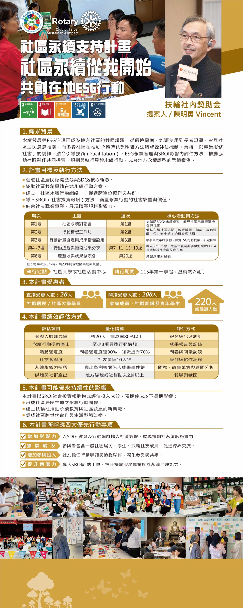

He uses the methodologies of facilitation, SROI, and ESG to connect the dialogue among the community, businesses, and members.
See full profile →
Sustainable development and ESG governance have become shared issues for local communities, from environmental protection and energy use to elderly care, all closely tied to community residents. Yet most communities lack clear methods and effectiveness-evaluation mechanisms when promoting sustainability. Upholding the spirit of "serving society through expertise," this project combines facilitation, ESG sustainability management, and the SROI (Social Return on Investment) impact evaluation method to help community partners jointly explore, plan, and carry out concrete sustainability actions, becoming a demonstration case of local sustainable transformation.
| Session | Theme | Week | Core Activities and Methods |
|---|---|---|---|
| Session 1 | Community Sustainability Dialogue | Week 1 | Through the SDGs sustainability board game, see the community's current sustainability opportunities and challenges |
| Session 2 | Action Ideation Workshop | Week 2 | Take stock of the opportunities and challenges of the sustainable community's current state (waste reduction, energy saving, elderly care, public safety, etc.) |
| Session 3 | Action Plan Drafting and Outcome Indicator Setting | Week 3 | Use participatory strategic planning to co-create ESG action proposals and set goals |
| Sessions 4–7 | Action Tracking and Phased Results Sharing | Weeks 7, 11, 15, 19 | Introduce the SROI concept; community representatives regularly participate in tracking, reviewing progress and improvement plans through the PDCA cycle |
| Session 8 | Harvest Celebration and Results Presentation | Week 20 | Compile and present results |
Note: Each session lasts 2–3 hours (20 hours total, including tracking and results compilation).
Total beneficiaries: 220 people
| Evaluation Item | Quantitative Indicator | Evaluation Method |
|---|---|---|
| Participation achievement rate | Target 20 people, achievement rate over 80% | Registration and attendance statistics |
| Sustainability action proposals produced | At least 3 concrete action ideas | Results reports and records |
| Activity satisfaction | Survey satisfaction reaching 90%, knowledge improvement 70% | Surveys and feedback interviews |
| Member participation | 10 member participations | Sign-in and collaboration records |
| Sustainability impact indicators | Deriving outcome event chains for each stakeholder | Surveys, story collection, and consultant analysis |
| Media and social media output | At least 2 local media or social media posts | Coverage and screenshots |
This project will use the SROI (Social Return on Investment) model to evaluate the effectiveness of its inputs, with the following long-term impacts anticipated:
Expand community impact through SDGs education and action tracking, demonstrating the Rotary Club's capacity for sustainable service.
Participants include general community residents, students, and Rotary members, promoting cross-sector exchange.
Members serve as action mentors and tracking partners, deepening participation and co-learning.
Introduce SROI evaluation tools to enhance the professionalism of Rotary service and the capacity for sustainability governance.